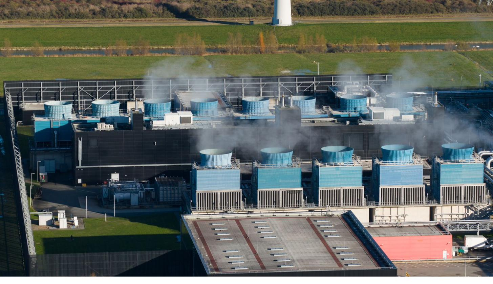

What It
Consumes
Every AI data center is a three-way draw on local resources: water, electricity, and land. Here’s where each one comes from - and why it lands on the surrounding community.
Water
Liquid-cooling systems circulate water to carry heat away from servers. Much of it evaporates and is gone - often pulled from the same drinking-water supply local residents depend on.
The core problem: data centers frequently land in places already facing water stress, and a single hyperscale facility can draw on the scale of a small town’s daily water use. When supply is tight, residents and agriculture compete with the facility - and utility bills can rise to cover the strain. [INSERT DATA: local water-usage figure for a specific facility, if you want to cite one - e.g. from the Oxford or Lincoln Institute case studies in your sources.]
Energy
AI hardware is enormously power-hungry. The pull is large enough to reshape a regional grid - and the costs of upgrading that grid often get passed down to ordinary ratepayers.
Two knock-on effects matter most for communities. First, to meet sudden demand, utilities may keep older fossil-fuel plants running longer than planned - meaning a “clean” digital service can extend the life of dirty power. Second, the cost of new transmission lines and substations can be socialized onto residential bills rather than charged to the company that triggered the need.
Land
Hyperscale campuses cover hundreds of thousands of square feet, often on rural or agricultural land rezoned for industrial use - permanently changing the character and ecology of an area.
Land is also where the fight is won or lost. Because zoning is decided locally, the conversion of farmland or “light commercial” land into heavy industrial data-center sites is exactly the decision point where an informed community has the most legal leverage - the focus of Step 04.
The Jevons Paradox - why efficiency isn’t the answer
You’ll hear that new hardware is “more efficient.” But as efficiency improves, companies simply build more and bigger - scaling operations fast enough to wipe out the savings. This is why waiting for the industry to become efficient on its own does not protect a community. The growth outpaces the efficiency.
